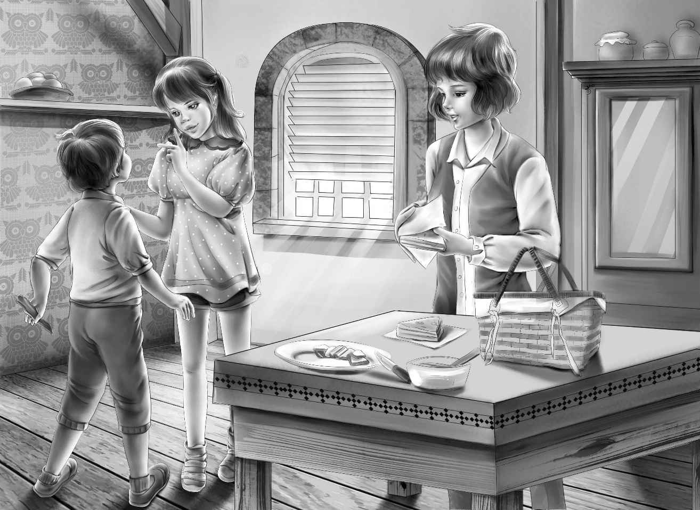

Chapter 4 The Potato Pit
“西姆，你在前面带路吧，”奥登先生说，“如果你确定你妻子愿意帮我们做三明治的话，那我们就跟着你回家。”
“她当然愿意，我敢打包票。”西姆说，“我们还有很多牛奶，可以装满你们的暖瓶。”
“西姆，这几瓶可不够我们喝的！”亨利说，“你看，我们有四个人，我一个人就能喝掉一升。”
“有个暖瓶还要留着给爷爷装咖啡呢！”维莉说。她总是为爷爷想得很周全。
“你们想喝多少牛奶都行，”西姆说，“我们家养着40头奶牛呢！”
大家一边聊着天，一边走出了后门。
“不用锁门，”西姆说，“就这样开着吧！”
说完，他上了自己的车，奥登一家则钻进了旅行车，两辆车一起驶到了紧挨着老杂货店的红房子前。西姆领着他们来到了厨房，一看到来客，他的妻子立刻笑着过来迎接。
“孩子妈，能给他们做些鸡肉三明治么？这是奥登先生和他的孙子孙女。他们想吃野餐了。”
“幸会，摩尔斯太太，”爷爷握了握她的手，“能为我们做这些，你实在是太好了！”

“这是我的荣幸呐！”摩尔斯太太说，“我昨天刚烤了面包，现在还剩下六条！”
“哇，自己烤的面包！”班尼喊道，“今天的野餐太地道了！”
“孩子妈，再做些鸡蛋三明治吧！”西姆又说，“这些孩子好像饿坏了。我去拿牛奶罐来。”
“你怎么叫她孩子妈啊，”班尼问，“她不是你妻子吗？”
“没错，她是我妻子，不过也是我六个孩子的妈妈，所以我习惯叫她孩子妈。”
摩尔斯太太一边在木盘上切鸡肉，一边和孩子们聊着天，“你们的胆儿可真大，敢搬到那座老房子去住。”
“为什么不敢？”班尼问，“难道那里闹鬼么？”
“鬼倒是没有，”摩尔斯太太说，“不过镇子里的人都不敢住在那儿。”
“为什么？”爷爷问，“你能告诉我原因吗？”
“原因我也说不上来，只是觉得老房子里有古怪，说不出的古怪。”
“这倒奇了，”杰西说，“大家都说不出所以然来。”
“是不是很久以前老房子里还发生了什么事儿？”亨利问道。
摩尔斯太太抬起头来，“没错，确实如此，大家都知道是这样，却不知道具体发生了什么事情。”
“那么，这镇子里最年长的是谁？”亨利问。
“年纪最大的？让我想想……应该是科尔爷爷，他已经快100岁了，可耳不聋，眼不花，拄着拐棍还能走路。”
“说不定他能记得小时候发生过的事呢！”杰西说。
“也许吧，这很有可能！不过我从来没向科尔爷爷打听过。”摩尔斯太太说完便开始剥鸡蛋了。
班尼惊讶地睁圆了双眼。
“原来是煮好的鸡蛋啊！”班尼大声说，“刚才看你敲蛋，我还担心蛋黄会流出来呢！”
“煮鸡蛋是我家常备的食物呐，家里的人都喜欢早餐吃凉凉的煮鸡蛋。”
“我可不喜欢，”班尼说，“当然野餐的时候吃没问题。早餐的话，我还是更喜欢吃刚出锅的半熟煎鸡蛋。”
摩尔斯太太笑着说：“是啊，大多数人都和你一样，只是我们家的人有点特别。”
无论如何，摩尔斯太太都是一个麻利的主妇。一会儿工夫，她就准备好了野餐篮，用牛皮纸包了些三明治，放进篮子里。“你们喜欢吃泡菜吗？”她问道。
“哈，我们超爱泡菜！”班尼说着，抬头看去，他本以为会看到一瓶装好的泡菜，结果却看到了几根比他的手还长的泡菜条。
“老天，这是泡菜超人啊！”他说，“一条就够我们吃啦！它们看起来真像黄瓜！”
“班尼，这就是黄瓜泡菜啊！”杰西告诉弟弟。
“啊，我不知道！”班尼说。
“对了，我还给你们准备了些曲奇饼，”摩尔斯太太说，“你们可以用来当饭后甜点。”
又圆又大的白色曲奇饼中间有个小洞，边缘被烤得焦黄酥脆，散发着喷香的味道。
“都准备好啦！”摩尔斯太太盖上野餐篮的盖子，“祝你们野餐愉快！”说完，她又将一暖瓶咖啡递给了杰西。
亨利接过篮子，向摩尔斯太太道了谢。爷爷要付钱给摩尔斯太太，却被她退了回来。“不用这样的，”她说，“帮助你们，我乐意！别跟我客气。”
奥登先生知道她说的是实话，也就不再勉强，只好说：“你的盛情我谨记在心。”孩子们也一一再次谢过了摩尔斯太太。
于是，他们乘着旅行车，回到了农场。大家将野餐篮放到前门边的大石板上，亨利给爷爷搬来一把椅子，其余的人都坐在暖乎乎的石板上，将三明治、鸡蛋和泡菜从篮子里取了出来。
细心的摩尔斯太太还预先在篮子里放了几个喝牛奶的纸杯，还有一套专门给奥登先生用的精致的咖啡杯、杯垫和勺子。“想得真周到啊！”爷爷不禁赞叹道，“咖啡就得用咖啡杯喝才香呐！”
“用纸杯喝就不香了。”班尼补充道。
“没错，我可喝不惯纸杯。”
野餐篮的最上层还有一根给望望准备的大骨头，望望一口叼起来，跑到边上去了。正当大家开心地吃着曲奇饼的时候，突然听到汽车驶来的声音。望望开始大叫起来，它跑到孩子们身边，不断地摇着尾巴。
“是谁来了？”杰西问。
“我估计是修屋顶的人。”班尼说。
果然被他猜中了。一个白头发的瘦高个男人停好车，从车里走下来，打量着孩子们和奥登先生。他的车后座上装满了木瓦片。
“您是来帮忙修屋顶的吗？”班尼问。
“是的。”那人回答。
“您带长梯子来了吗？”亨利问道。
“没有！”
“那你要等着西姆拿梯子过来。”爷爷说。
“好的。”那人说着，开始将木瓦片从车上卸下来。
爷爷笑了：“能问一下你的名字吗？”
“当然，我叫德伯特·金格。就叫我小德吧！”
班尼问：“您也听说了吧？我的简姑婆马上要搬过来住啦。您估摸着多久才能铺好屋顶呢？”
“这我可说不准。”小德说着，又搬下一箱钉子。这时，另一辆车慢慢驶了过来。
“这次又是谁来了呢？”杰西问道。
“我敢说，还是来帮忙修房子的人。”亨利回答。
“快看，”维莉说，“车里有三个人！爷爷，您一下子让整个镇子都忙活起来了呢！”
接着，西姆也带人过来了。这样，人手就增加到六个了。
爷爷对西姆说：“我们一起进去看看该从哪儿开始下手吧！”于是，大家跟着爷爷走进房子，望望也摇着尾巴跟了进来。
老宅的地板是用宽宽的木板铺就的。
“有些地方只需要清理一下就行了，”西姆说，“看来房子的前任主人维护得还不错。”
“我觉得这里已经很久没人住了。”班尼说。
“不，上一家人前不久才搬进来，只不过住了不到六个月就搬回纽约了。他们不习惯乡下的生活。”西姆说。
一个帮工看着班尼：“你们怎么会想到住在这里？”
“我们不住，”班尼回答道，“是我们的简姑婆要来这儿。她和我爷爷以前都曾在这座房子里住过。这位就是我的爷爷！这是他小时候的家。”
爷爷看了那帮工一眼，问道：“这房子有什么问题吗？”
“我也不知道，”那人显得有点局促不安，他看了看西姆，继续说道，“反正关于这老房子的传言很多，故事也很多。”
爷爷说：“那就随便讲一个给我听吧！”
“好吧！听过老式长枪的故事吗？”
“听说过。”爷爷回答道，“枪就在西姆家里。”
“不，是在我爸家里。”西姆赶紧纠正道。
“反正我很快就能看到它了。”爷爷继续问道，“那把枪怎么了？”
“大家都说，枪是在这房子里找到的，”帮工回答道，“我猜它应该是有些年头的老式步枪了。”
“都是千篇一律的传闻。”爷爷换了个话题，“不管怎样，将房子修好才是关键。大家先从窗户和屋顶修起，再装两个洗手间，接上热水，安上火炉，大概需要多长时间？”
“三个星期就足够了，”西姆说，“我们人手多。”
维莉说：“学校很快就要放假了，到时候我们也可以过来帮忙。”
“我们还要解开老房子的秘密呢！”班尼信心百倍地说，“我敢肯定，一切都是谣言，这房子什么问题都没有。”
一个帮工看着班尼，笑了起来：“小家伙，或许你说得对，不过我觉得这房子绝对有古怪。”
“好吧，就算有古怪，爷爷也会查出真相的。”班尼说。
“这倒是实话，”西姆说，“我也相信。”
工人们走出房子，将梯子铺到屋顶，余下的工人则留在屋里负责生火。
“你们很冷吗？”亨利惊讶地问道，要知道今天的天气非常暖和。
“不冷，不过待会儿我们需要用热井水。”一个工人解释道。
工人们用大水壶烧了很多热水后，便开始清洗地板和墙壁了。
奥登一家人看了一会儿，开始觉得无聊起来，便晃悠到了地下室里。
“老天，看这个地方！”班尼一边适应着地下室的黑暗，一边叫道，“现在我相信了，这个地下室一定是独立战争时期修建的。”
“这块水泥地的大石板下有个洞，”亨利打量着，“估计是冬天用来储存蔬菜的。”
“没错，亨利，”爷爷说，“这就是以前我们储存土豆的地窖，也叫土豆窖。我记得很清楚，小时候我经常下去拿晚饭用的土豆，每次都要取二十几个，要知道当时我们的农场雇了好多人呢！”
四个孩子跨过石板，朝地窖里看去。地窖很深，是用石头垒砌而成，并抹上了石灰。
“可惜没有土豆。”班尼说。
大家忍不住笑了起来。维莉说：“你觉得现在还能找到独立战争时期的土豆吗？”
爷爷微笑着说：“我已经不记得独立战争了，但对土豆还有印象，说明这个地窖一直都是存放土豆的。”
“说不定秘密就藏在土豆窖里。”说完，杰西又仔细打量了一下土豆窖。
“不会的，我认为不可能。”奥登先生走上台阶，“在我住的那么长的时间里，地窖里除了土豆什么都没有。”
“我在想，秘密会不会藏在厨房的大壁炉里呢？”维莉说，“要不咱们去看看那两个烤炉吧！”大家走出地下室，来到厨房。
“我钻进去看看！”班尼提议道。这是个好主意，班尼不仅能随意进到炉子里，还能轻松地在里面站起来。
壁炉两旁各有一个烤炉，但班尼什么线索也没找到。
“哎，我看咱们还是赶紧去找汽车旅馆吧，”奥登先生看了看手表，“我们至少要订三间房呢！”
“但愿旅馆能允许望望住进去，”班尼说，“我知道有些汽车旅馆是不接受动物的。”
这时，工人们已经将客厅的地板清洁完毕了。
“哦，多漂亮的房子呀！”杰西情不自禁地惊呼道，“要是等我们挂上白纱窗帘就更好看啦！”
工人们都笑着看向她。
“干得好！”爷爷赞许道，“收工后，你们就直接离开，不用锁门——西姆是这么说的。”他微笑着看了看每个人。
“找到秘诀啦，”亨利自言自语道，“难怪大家都喜欢帮爷爷干活，是因为他总是直视着别人，而且笑容可掬。”